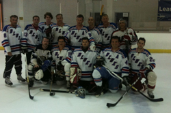

2012 Spring -- Division V Aviator Champions (11-1-0)
2012 Spring Championship Team Picture

Click Photo To Enlarge
2012 Winter -- Division V Aviator (10-2-0)
2011 Winter -- Division V Aviator (10-3-0)
2010 Fall -- Division V Aviator Champions (Undefeated Season) (13-0-0)
2010 Winter -- Division V Aviator Champions (10-3-1)